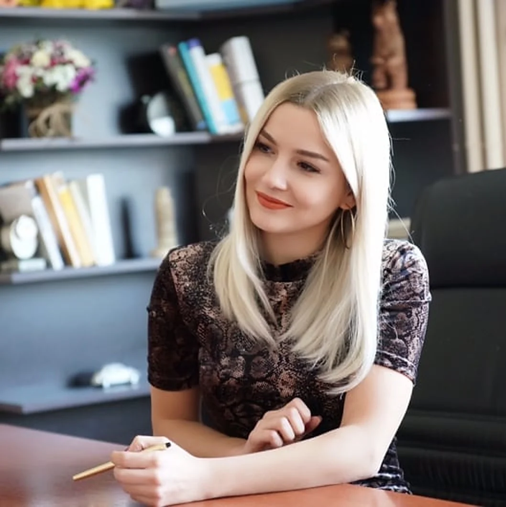

Büşra Ertaç, lisans eğitimini Yeditepe Üniversitesi Psikoloji Bölümü’nde, yüksek lisans eğitimini İstanbul Kent Üniversitesi Klinik Psikoloji programında tamamlamıştır. Yüksek lisans tezinde obsesif inanışların çocukluk çağı olumsuz yaşantıları, bilişsel çarpıtmalar ve ruminasyonla ilişkisini incelemiştir.

Eğitim
Klinik Psikoloji, Tezli Yüksek Lisansİstanbul Kent Üniversitesi · Tez danışmanı: Prof. Dr. Mehmet Zihni Sungur
Psikoloji, LisansYeditepe Üniversitesi
Terapi eğitimleri
Bilişsel Davranışçı TerapiProf. Dr. Mehmet Zihni Sungur
EMDREmre Konuk, Davranış Bilimleri Enstitüsü
Bilişsel Davranışçı Sistemik Çift ve Cinsel TerapiProf. Dr. Mehmet Zihni Sungur
Büşra Hanım bu süreçte sorunlarımla ilgili çok fazla farkındalık sahibi olmamı sağladı. Her seans sonrası sayesinde edindiğim bilgiler ve aydınlanma ile kendimi, hayatımı ve düşüncelerimi günden güne daha detaylı inceleme fırsatı buldum. Kaygılarımla baş etme konusunda çok yardımı oldu, kendisine çok teşekkür ediyorum. Kullandığı teknikler olsun kendisinin yaklaşımı olsun çok memnum kaldığım birisi, çevremdekilere her zaman tavsiye ediyorum.
★★★★★
kesinlikle çok tavsiye ediyorum. kendimi kaybettiğim ve bulamadığımı düşündüğüm, takıntılarımla boğuştuğum zaman Büşra hanımdan randevu aldım. bana çok yardımcı oldu, değişmemde katkısı çok büyük. ayrıca kendisi çok zarif ve kibar birisi.
★★★★★
Kimsenin bana yardım edemeyeceğini düşündüğüm bir dönemdi ve herşey zincirleme kötü gidiyordu. Çocukluğumda yaşadığım travmalar, yaşadığım kayıplar, stres ve depresyon işin içinden çıkılmaz hale gelmişti evden çıkmıyor kimseyle konuşmuyordum ve yaşamaktan hiçbir zevk almıyordum. Arkadaşımın tavsiyesiyle Büşra hanıma gittim ilaç kullanmadan EMDR ile herşeye yeniden pozitif bir şekilde başladım, kendisine çok teşekkür ediyorum.
★★★★★
İlgisi, mesleki tecrübe ve donanımını daha ilk seansta anlayabildiğiniz bir psikolog düşünün ki, bana kendime dair birçok şeyi değiştirebileceğim inancını kazandırdı. Ne kadar kaygım, öfkem ve negatif düşüncem varsa hepsini çok kısa sürede yenmemi sağladı sevgili hocam. Sonsuz teşekkürler…
★★★★★
Büşra hanımla 4 aydır çalışıyoruz. belirli takıntılarım vardı.günlük hayatta zorlanıyordum. şu an hayatımdaki bir çok şeye daha toleranslı ve esnek bir düşünmeyle bakıyorum.Ayrıca çok kaygılı bir yapım olduğundan olumsuz şeylere karşı heyecanlanıyordum. öfkeyle baş edemediğim zamanlar oluyordu. şimdi ise daha sakinim ve kontrol edemediğim şeyler üzerinde kaygılanmayı ,fazlaca düşünmeyi bıraktım. kendisine sonsuz teşekkürlerimi sunarım. iyi ki varsınız..
★★★★★
Alanında uzman, işini ehliyle yapan bir terapist. İyi ki varsınız ve iyi ki sizle tanışmışım.
★★★★★
tanıştığım en kibar psikolog cidden
Değerlendirmeler, Doktorsitesi profilinde yayımlandıkları biçimde aktarılmıştır. Kaynağı görüntüleyin
08
Yazılar
OKBŞüpheKontrol
OKB’de şüphe döngüsü
Şüphenin neden sonlanmadığı ve kontrol davranışının döngüyü nasıl sürdürdüğü.
Sayfanın sonundaki başvuru formu ya da WhatsApp üzerinden talebinizi iletebilirsiniz. Başvurunun ardından uygunluk ve görüşme düzeni hakkında tarafınıza dönüş yapılır. Site üzerinden doğrudan randevu oluşturulmamaktadır.
Bireysel görüşmeler yaklaşık 50 dakika sürer ve çoğunlukla haftada bir yapılır. Sürecin ilerleyen aşamalarında seans aralıkları açılabilir.
Süre; başvuru nedenine, hedeflere ve kullanılan yönteme göre değişir. Değerlendirme görüşmelerinin ardından öngörülen çerçeve danışanla paylaşılır.
Görüşmeler, meslek etiğinin gizlilik ilkesi çerçevesinde yürütülür; paylaşılan bilgiler danışanın onayı olmadan üçüncü kişilere aktarılmaz. Gizliliğin sınırları ve kişisel verilerin işlenmesi Gizlilik ve KVKK sayfasında açıklanmıştır.
Araştırmalar, kaygı bozuklukları ve depresyon başta olmak üzere pek çok alanda görüntülü görüşmeyle yürütülen terapinin yüz yüze terapiyle benzer sonuçlar verdiğini göstermektedir. Uygunluk, ön görüşmede değerlendirilir.
Hayır. Tanı almış olmak ya da ağır bir sorun yaşamak gerekmez. Günlük yaşamı, ilişkileri ya da iş yaşamını zorlaştıran her durum için değerlendirme görüşmesi yapılabilir.
Yetişkinlerle bireysel psikoterapi, çiftlerle çift terapisi ve cinsel terapi yürütülmektedir.
Psikolog, psikoloji lisans eğitimini tamamlamış kişidir. Klinik psikolog, lisansın üzerine klinik psikoloji yüksek lisansı yaparak psikoterapi uygulama yetkinliği kazanır. Psikiyatrist ise tıp eğitiminin ardından psikiyatri uzmanlığı almış hekimdir; tanı koyabilir ve ilaç tedavisi düzenleyebilir.
Psikologlar ilaç tedavisi düzenlemez. İlaç tedavisi ya da tıbbi değerlendirme gerektiği düşünülen durumlarda psikiyatri hekimine yönlendirme yapılır; psikoterapi, hekimle eşgüdüm içinde sürdürülür.
Ücret bilgisi, ön görüşme başvurusunun ardından tarafınıza iletilir.
Değişiklik taleplerinin mümkün olan en erken zamanda iletilmesi beklenir. İptal ve erteleme koşulları ilk görüşmede paylaşılır.
Ofis, İstanbul Kadıköy’de, Bostancı Mahallesi Emin Ali Paşa Caddesi üzerindedir. Açık adres ve yol tarifi Ofis ve iletişim bölümünde yer almaktadır. Görüşmeler online olarak da yürütülmektedir.
10
Ofis ve iletişim
Bostancı Ofisi
Bostancı Mah. Emin Ali Paşa Cad. No:106 Zerren Apt. D:19, Kadıköy, İstanbul
Başvurunuzun ardından uygunluk ve görüşme düzeni hakkında tarafınıza dönüş yapılır. Görüşmeler yüz yüze ve online yürütülmektedir. Bu form randevu oluşturmaz.